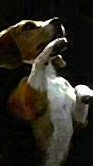

|
 |
Anteriormente em "Porthos' Log": "A dupla B&B foi responsvel
por Voyager." |

|
Dvida da semana:
"As cuecas da Frota Estelar
so anatmicas?" Fala da semana: "No tenha medo do vento,
alferes Mayweather." Abanando o rabinho: O piloto parece direcionado para audincias mais genricas do que aquelas tpicas de Jornada (ao menos Porthos no um pitbull). Parece haver uma maior preocupao com os personagens e com arcos de histria do que em Voyager, mas a esttica da srie (desenvolvida a toque de caixa) lembra um bocado a sua antecessora (doutor Neelix algum?). Os conflitos so razoavelmente rasos e as motivaes dos envolvidos, mal definidas. No se pode fazer uma srie realmente sobre personagens sem o esforo consciente dos seus produtores de "entrar" na cabea desses personagens semana aps semana. No momento, B&B esto mantendo uma distncia segura dos seus construtos mentais. Como aventura escapista "Broken Bow" funciona, mas vai pouco alm disso. Aparentemente o James Cromwell exigiu um "dispositivo de camuflagem" para aparecer no episdio, pois precisamos de uma lupa para v-lo na imagem da gravao. O discurso de Cochrane e o lanamento da nave no abusaram da manipulao emocional do espectador (fomos poupados mesmo da fanfarra de Courage) e o resultado foi decente, alm de explicar a origem do monlogo de Kirk. O que faltou foi ver a reao da humanidade como um todo quando do lanamento da Enterprise. Mas ao julgarmos pelo "esprito" da abertura, nada similar a isso vai acontecer durante a srie. Esse primeiro contato com os Klingons no viola continuidade estabelecida (juro!). Mas foi uma m escolha e uma precipitao dos produtores em us-los to cedo na srie (devido sua grande exposio em sries anteriores). Eventualmente a popular raa de guerreiros poderia aparecer em um encontro no espao com a Enterprise, que poderia ser muito mais interessante do que a "trama de tarefa" (TM) que tivemos aqui. Talvez at em um final de temporada. Tommy 'Tiny' Lister Jr. foi um hilrio animal como Klaang. O visual retr de Kronos foi mosca. Tivemos boa "continuidade" com relao a "Drumhead", da quarta temporada da Nova Gerao. Mas a cena final em Kronos foi ridcula, deveramos ter tido legendas naquele momento. Sem problemas quanto ao uso do visual "'Jornada nas Estrelas: O Filme' e alm" para a raa de Worf. A nave (Enterprise, NX-01) de fato pouco lembra uma Akira, a parte inferior do disco "podre" (no bom sentido) e parece literalmente um disco voador, bastante retr. O efeito de dobra foi muito bem bolado. O que no funciona que a nave parece um pouco "desequilibrada", com a linha de empuxo das naceles aparentemente passando acima do centro de gravidade da nave, dando a impresso de que ela iria girar para baixo e no ir para frente com os motores de dobra acionados (o problema no bem "fsico", esttico com raiz em uma intuio fsica). Outras "podreiras" que funcionaram: os comunicadores (com rudo caracterstico da Srie Clssica), as portas (tambm com rudo caracterstico da Clssica), os torpedos que no acertam em nada, os cabos de trao (que milagrosamente conseguem acertar em alguma coisa mesmo numa atmosfera lquida -- na prxima melhor mandar um torpedo amarrado no cabo!), o visor "estilo Spock" de T'Pol, todas as armas portteis, o ncleo de dobra horizontal etc. Temos um conjunto de belos detalhes como a esttua de Cochrane no quarto de Archer e as gravuras (feitas por Archer?) de "todas as naves Enterprise". Outros assuntos de continuidade relativos a visual e tecnologia (comparando as Enterprises de Archer e Kirk, por exemplo) parecem bastante justificveis e claramente mereceram a ateno dos criadores da srie. Falta apenas avisar a T'Pol que Vulcanos tocam a comida com as mos -- vide Spock em "The Enterprise Incident". As citaes Srie Clssica foram sutis e funcionaram bem. Infelizmente a citao a Ronald D. Moore foi infeliz. Como uma raa to atrasada, como a humana neste ponto da cronologia de Jornada, chegou a uma posio de destaque no cenrio galctico a questo central que Enterprise enquanto srie tem que responder. Bilingsley claramente o melhor nome do elenco e por isso o doutor saiu o melhor (ou nico) atuado, com pausas e inflexes, apesar do material trivial fornecido. "Aquele" sorriso que no pegou bem. Armstrong um favorito dos fs que tem que aparecer mais vezes e a idia de Porthos (ainda que absurda) foi uma das melhores da dupla B&B para a nova srie. Levantando a perninha: A abertura inova (em termos de Jornada) ao trazer uma cano pop como tema e mostrar cenas no-pertencentes ao universo de Jornada (o nosso universo e o de Jornada no so os mesmos -- o que alguns fs parecem desconsiderar s vezes). A cano uma vergonha, aparentemente inspirada na atitude de sries da Warner como "Charmed", "Smallville" e "Roswell". O mal estar de ter uma cano escrita por Diane Warren em Jornada indescritvel. O engraado que a dupla B&B manteve as mesmas restries para a msica incidental do episdio e ficamos com mais "msica de turbo-elevador" (TM). A tentativa de capitalizar com o tema "explorao" junto opinio pblica claramente infeliz. Jornada no tem nada a ver com real explorao (espacial, por exemplo). Se tivssemos algo parecido com real explorao nos episdios, apenas uma meia dzia de trs ou quatro estaria interessada. Jornada sobre a condio humana. E seus temas de pseudo-explorao so apenas um meio para um fim. A dupla B&B mostra no reconhecer isto. A ausncia das imagens do programa espacial russo (Gagarin, Laika, Sputnik, Tereshkova, Mir etc.) a gota d'gua. Dando ares de propaganda institucional da NASA s imagens de abertura, algo meio na contramo, para uma srie que se diz tentando "recapturar" a "essncia de Jornada nas Estrelas". Um outro "cuidado" da dupla B&B foi utilizar imagens mais reconhecveis pelo pblico, sem considerar muito a relevncia histrica relativa entre as imagens. Tal tema de "explorao" (ironicamente) explorado de uma forma infantil nas imagens de abertura. E as imagens de diferentes fontes "brigam entre si" medida que so exibidas. A abertura de Enterprise j nasce datada em som e imagem. Grande "inovao", Braga e Berman. No parece nem ao menos refletir a srie em si. Ficam poucas dvidas que a abertura ideal seria mostrar as guerras da virada dos sculos (20 e 21), o fundo do poo a que chegou a Terra. Mostrar o governo mundial se formando, mostrar o primeiro contato com os Vulcanos e mostrar o progresso da humanidade nesse meio tempo at as vsperas do lanamento da nave. Tudo isto embalado pelo tema de "Primeiro Contato". Como uma triste surpresa temos alguns problemas iniciais nos valores de produo da nova srie. A fotografia em certo sentido foi uma decepo, acabou lembrando mais um videoclipe (ou um comercial dirigido por um diretor de videoclipes) do que cinema (o que muitos esperavam), no chegando aos ps da fotografia (por exemplo) de "C.S.I", ainda que acabe impondo um tom de " diferente" para a srie (juntamente com o formato widescreen, que no foi adotado na exibio brasileira pelo AXN). O que definitivamente no uma verdade concreta. Os efeitos visuais no tiveram uma qualidade uniforme, a tomada da sada do shuttlepod, por exemplo, foi bem ruim. No houve nenhum dramtico salto de qualidade com relao ao que Voyager vinha fazendo na temporada anterior (o efeito tridimensional do transporte parece no virar nunca uma realidade). A melhor colocao das cmeras nos cenrios parece estar dando trabalho. A enfermaria parece ok (apesar de ter ficado muito parecida com a de Voyager), mas a ponte e principalmente a engenharia (com "cara de galpo"), ficaram com pouca vida no episdio. Outro grande problema foi a edio bastante confusa e atropelada, incluindo os cortes para os flashbacks. Alis, com relao aos flashbacks, fica at difcil acreditar que foram esses mesmos James L. Conway direo) e Marvin Hush (fotografia) que executaram o clssico "Necessary Evil", da segunda temporada de DS9, com direito a uma fotografia gtica inesquecvel e uma magistral utilizao de flashbacks. Alguns imaginavam Enterprise utilizando um estilo de escrita e execuo similar (digamos) a do episdio "Workforce", da stima temporada de Voyager: andamento frentico, cenas pequenas, uma edio nervosa, alguma sofisticao estilstica etc. O que vimos aqui pareceu pouco confiante e embolado. Decepcionante em mais de um nvel. "Atores e personagens" representam usualmente o ponto que se desenvolve mais lentamente no comeo de uma nova srie e aqui em Enterprise no diferente. Alm da falta de originalidade dos personagens regulares, as caracterizaes esto "meio" finas (os personagens parecem um pouco "genricos" com interpretaes meio "retas", faltam atuaes que, atravs de alguma forma de subtexto, "digam mais sem dizer" e tambm caracterizaes mais afiadas e distintas). Aparentemente os atores regulares receberam a diretiva de sub-atuarem, serem o mais natural possvel (sub-atuar no no-atuar). Infelizmente o resultado lquido at aqui que eles parecem que NO esto atuando. Em primeiro lugar os Vulcanos tem que ser mais bem caracterizados, se continuarmos com esse paternalismo transparente de Soval e cia., vai ficar difcil de assistir. Algum esclarecimento sobre o "porqu" das decises tomadas com relao Terra, desde o primeiro contato, deve ser providenciado correndo. A questo dos Vulcanos no de continuidade, diversidade cultural ou de que eles so de outra poca. A caracterizao dos Vulcanos simplesmente intolervel com est. Arrumem uma opo melhor e fiquem com ela RPIDO! Simples assim. Sato a nica personagem (alm do doutor) com uma personalidade distinta (e lembra um bocado a Ezri Dax, em mais de um sentido). Ela fundamental para a misso e possui claramente sentidos sobre-humanos (ser que ela tem algum segredo?). Reed e Mayweather (Montgomery incapaz de sequer parece experiente em tela) parecem tremendamente acessrios. Eles soam extremamente "uma nota". Faltou o "novo grande trio": Tucker, T'Pol e Archer. Tucker tambm soa um pouco "uma nota", mas sua amizade por Archer foi posta para bom uso -- foi melhor "angariador de simpatia" para o bom capito do que todos aqueles flashbacks juntos. Trineer o segundo mais forte do elenco nesse ponto. Blalock ainda tem muito que aprender. Ela tem dificuldade at de manter a caracterizao Vulcana. Dando escorregadas de tempos em tempos. Seus olhos so completamente mortos. Dando muito mais a impresso de algum sob o efeito de drogas pesadas do que algum sob total controle de suas emoes. constrangedor (em sua obviedade) termos outra "discpula da Mulher-Gato" (TM) em Enterprise, como foi Seven of Nine em Voyager. Bakula ainda est brincando de capito de Jornada e vai demorar um tempo para "achar Archer" e ainda mais tempo para "diferenciar Archer" dos outros capites. Foi uma decepo a forma que o ator reagiu com relao ao tiro que Archer levou na perna. Canastrice clssica. E fez o mesmo quando se materializou na plataforma de transporte aps ser resgatado. A caracterizao de Archer a de um "cowboy sensvel". de se esperar que ele se mostre mais diferenciado nas prximas aventuras. Sulibans, Silik, "Cara do
Futuro" e "Guerra Fria Temporal: Fleck pode dar uma crescida como Silik, apesar de o que vimos aqui no ter sido to bom. Archer (que arriscou muito, no levou informao nova nenhuma pra casa e quase morreu) nunca deveria ter sado vivo da "cmara temporal" -- chega at a ser engraado o fato de Archer conseguir usar as particularidades do ambiente melhor do que Silik. O arco temporal uma total incgnita que se espera que seja uma forma de dar algum propsito srie e no simplesmente de promover "encontros entre tripulaes de Jornada de diferentes eras" (TM) para ganhar audincia em episdios especiais. Foi um erro puxar para o piloto toda esta histria dos Sulibans e do seu "senhor do futuro", poderia e deveria ter sido apresentada de forma mais gradual ao longo da temporada. Sarin deu as informaes pertinentes a Archer, quase que em um "servio de utilidade pblica". Mas o que est feito est feito. Espera-se que a srie Enterprise no indique ao seu final que a criao da Federao foi fruto do envio para o passado de tecnologia e informao do futuro. Seria inaceitvel. De toda maneira, tal "arco temporal" agora parte da srie, apesar de ser muito menos interessante que as outras possibilidades de longo prazo da srie, envolvendo conflitos entre humanos, Vulcanos, Andorianos e Klingons, a guerra Terra-Romulus e a Fundao da Federao. Sexo, Orelhas e "Tuckers": Entretanto no existem problemas to graves quanto s outras exploraes desta "faceta" de Enterprise. As danarinas/prostitutas comedoras de insetos (cujo cafeto era um sapo) foram ok: se voc vai a um bordel aliengena, voc v uma prostituta aliengena. Sarin tendo que beijar Archer para saber se ele est dizendo a verdade foi algo meio boc, no nvel da Sato eventualmente (tentar) traduzir os latidos do Porthos. Quanto s "coxas de Bakula", as duas cenas, na enfermaria e em seus aposentos, foram naturais, sem grosseria. Entrevista da semana: A nossa dupla de correspondentes internacionais (Nit & Picker) no conseguiu entrar em contato com ningum da produo de Enterprise esta semana para uma entrevista, lamentamos o inconveniente. Entretanto a dupla de especialistas tem algo a acrescentar mesmo assim. Nit: Fui s eu, ou eles
colocaram Kronos "um pouco" perto demais da terra? Picker: Como Sarin pde
"contaminar" Klaang com a informao sem ele
perceber? Como o Alto Conselho Klingon sabia onde procurar e que
tecnologia usar? Nit: curioso que o cara
do futuro no forneceu tecnologia de transporte ao grupo de
Silik. Nit: Curioso tambm que a
"Hlice" no tenha nenhum tipo de artilharia pesada. Nit: E sobre as nossas
previses? Nit: Eu sou Nit. Recomendao: (Dedicado aos "melhores
dentre os melhores": os Beagles!) |